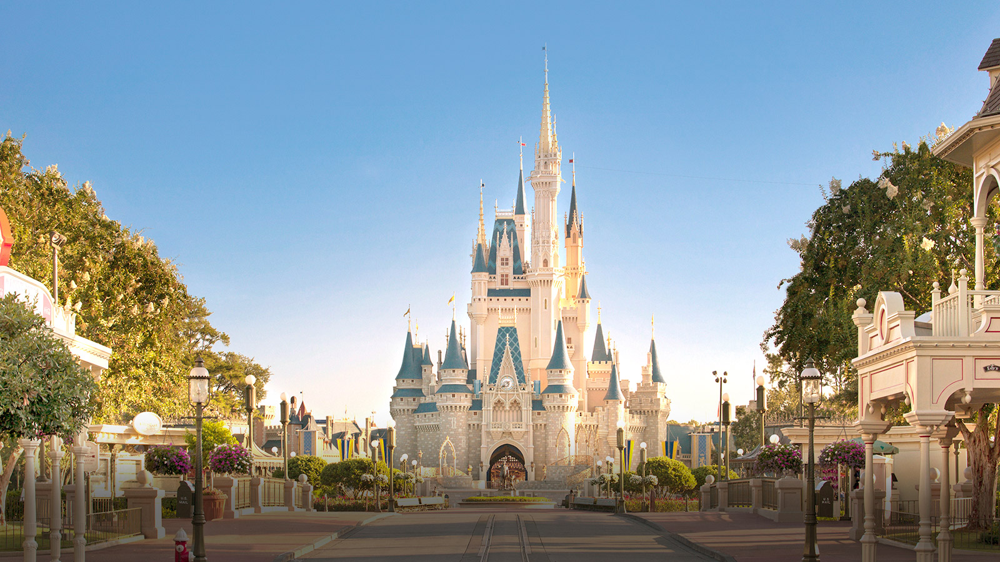
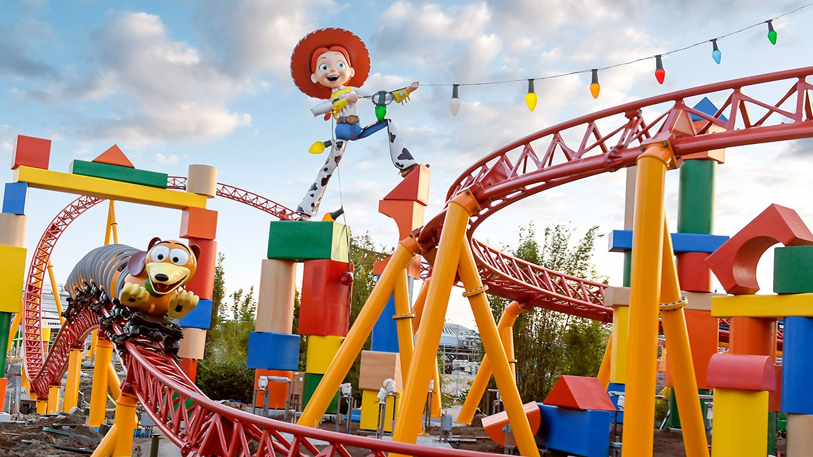
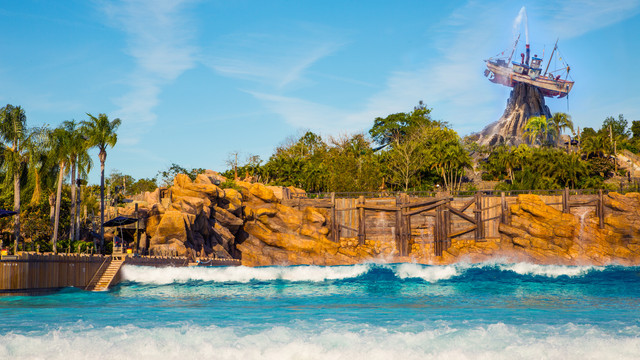
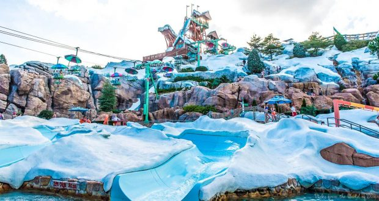
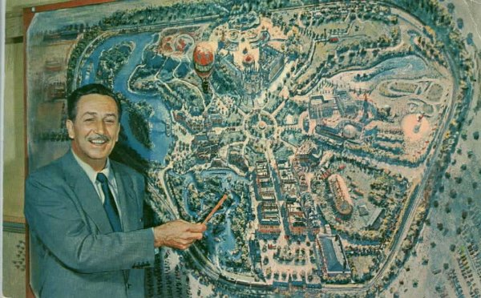
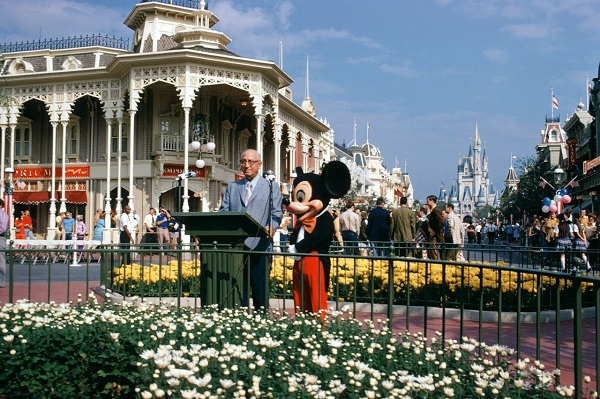
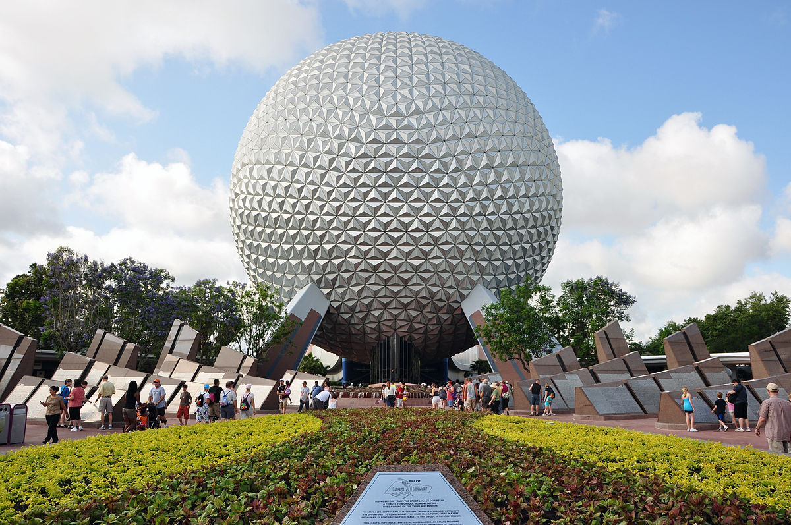

Disney Springs, antigamente chamada de Downtown Disney é um centro de compras, restaurantes, teatro e outros tipos de entretenimento localizado no complexo Walt Disney World.
O lugar ideal para se divertir, com qualidade o tempo todo
Lojas
Roupas e acessórios, Arte e colecionáveis, Câmera e mídia, Comidas e bebidas, destiladas Presentes e utilidades domésticas, Saúde e beleza, MagicBands, Orelhas do Mickey, Bótons e Vinylmation, Brinquedos e pelúcias.
Restaurantes
Culinária americana, Culinária Asiática, Culinária Cubana, Culinária Irlandesa, Culinária Italiana, Culinária Japonesa, Culinária Latina, Culinária Mexicana, Frutos do mar, Steakhouse e Sushi.
Entretenimento
Concertos, Entretenimentos ao vivo, Shows no palco e Teatro
Atividades
Aerófilo o líder Mundial em voo de balão e MarketPlace Carrossel
Nossos 4 Parques Temáticos
Explore terras de encanto sem fim, onde sua fantasia se torna realidade
Magic Kingdom Park

O Magic Kingdom Park é o parque temático onde se localiza o fabuloso castelo das princesas da disney, "O lugar mais mágico do mundo", onde tem diversas atrações com o foco nos principiais personagens da disney e suas princesas.
Epcot
O Epcot é o parque temático chamado de "Feira do mundo permanente", onde tem diversas atrações que exploram a inovação tecnológica e a cultura internacional.
Disney's Hollywood Studios

Disney's Hollywood Studios é o parque com o foco nos grandes sucessos e apresentações da disney no cinema, tendo o parque mais recente inaugurado "Toy Story Land".
Disney's Animal Kingdom
Disney's Animal Kingdom é o parque com o foco nas suas atividades e exibições voltadas para o mundo animal e nas aventuras de seus sucessos do mundo animal e "mítico" como avatar e jurassick park.
Nossos 2 Parques Aquáticos
Disney's Typhoon Lagoon

Disney's Typhoon Lagoon é o parque aquático com um tema tropical e praiano onde tem uma praia artificial com piscina de ondas artificiais grandes suficientes para que as pessoas consigam surfar com tranquilidade, também no ambiente tropical do park há um rio bem "tranquilo e calmo" onde as pessoas podem relaxar.
Disney's Blizzard Beach

Disney's Blizzard Beach é o parque aquático com um tema de um resort de esqui com toboáguas enormes e uma montanha de neve artificial simulando um ambiente gélido e frio, com diversos tobogãs enormes e com area para crianças pequenas poderem se divertir sem preocupações.
Sobre
Os sonhos existem para tornarem-se realidade - Walt Disney
17 de Julho - 1955
Inauguração da Disneyland

Mesmo com o sucesso de seus filmes, Walt queria fazer um parque onde crianças e adultos pudessem brincar juntos. Para isso criou a Disneyland
A construção do Magic Kingdom começou em 1967 ate 1971

Pensando em fazer um parque maior e mais incrível que a Disneylândia, que havia inaugurado em 1955 na Califórnia, que Walt Disney, ainda no começo dos anos 60, começou a idealizar o Magic Kingdom. Sua ideia era criar não apenas um parque de diversões, mas sim um centro de lazer e descanso para toda família e para isso precisava de espaço para as atrações, restaurantes e hotéis. A cidade de Orlando foi escolhida por ter em suas imediações lugares de sobra para hospedar seus sonhos.
1º de Outubro de 1982.
O próximo parque a ser inaugurado foi o Epcot

Os engenheiros da Disney logo entenderam que não seria possível realizar o sonho de Walt Disney de ter uma comunidade do futuro devido a vários fatores. Por isso, decidiram construir um parque temático que englobasse essa idéia. O parque ganhou o nome do projeto original: Epcot.
E em 22 de Abril de 1998
Foi inaugurado o Animal Kingdom.
Hoje o complexo Disney na Flórida conta com 4 parques temáticos, 2 aquáticos, 1 centro de compras, 2 campos de golf, 1 centro de atividades esportivas e mais de 20 hotéis. E de toda a área comprada pela Disney na Flórida, apenas 1/3 já foi construída. Isso significa que ainda há bastante espaço para crescimento e expansões.
Venha conhecer a magia do nosso Resort Disney's All-Star Music.